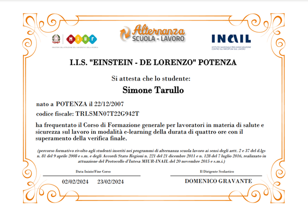

Scuola Lavoro

Durante l'anno scolastico 2023/2024, ho conseguito l'attestato di sicurezza sul lavoro, un attestato fondamentale per poter partecipare ai progetti di alternanza scuola-lavoro in piena conformità alle normative vigenti e con la massima tutela. Questo attestato certifica la mia conoscenza delle misure di prevenzione e protezione sul luogo di lavoro, garantendo così che io possa affrontare le esperienze professionali in totale sicurezza e consapevolezza dei rischi. Tale formazione rappresenta un passo importante per il mio percorso formativo, permettendomi di vivere le attività di alternanza con maggiore responsabilità e preparazione.